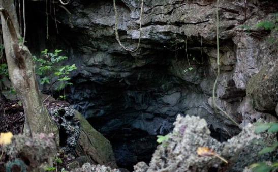
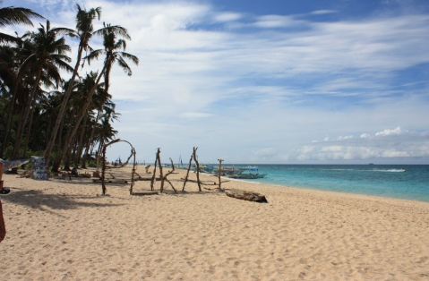
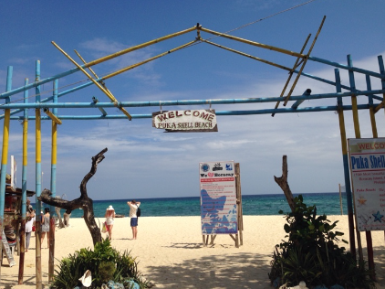
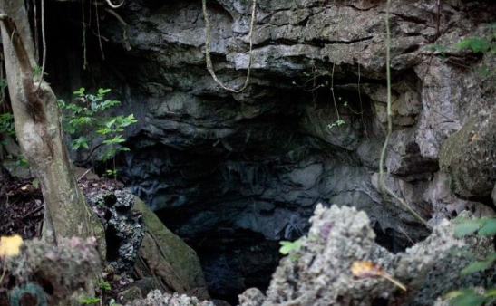
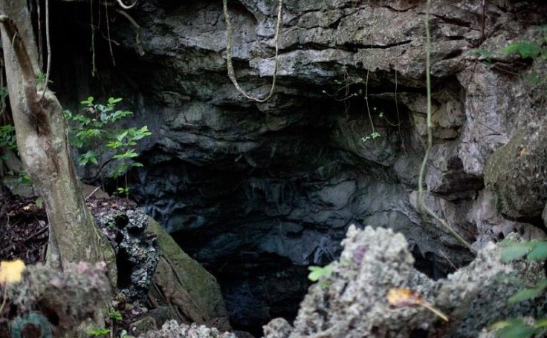

말 그대로 박쥐가 사는 동굴이다. 천장 빼곡히 박쥐다. 엄청 많다. 밑으로 내려가면 동굴끝이 보이는데 바다와 연결되 바닷물이 고여있다. 내려가서 보면 바다에서 빛이 비치며 맑은 바닷물이 고여있는 게 굉장히 아름답다. 경사가 꽤 가파르고 박쥐의 배설물로 바위가 굉장히 미끄러우므로 요주의

섬 중심부의 대형 상점가로, 웬만한 먹거리 및 입을거리는 모두 있다. 보라카이엔 맨몸으로 가도 페소와 달러만 가지고 간다면 먹고 즐기는 데에는 문제가 없을 정도로 디몰에서 웬만한 쇼핑 및 식사가 가능하다. 코코넛 아이스크림과 치즈케이크, 그리고 피자가 아주 유명하다.


 
